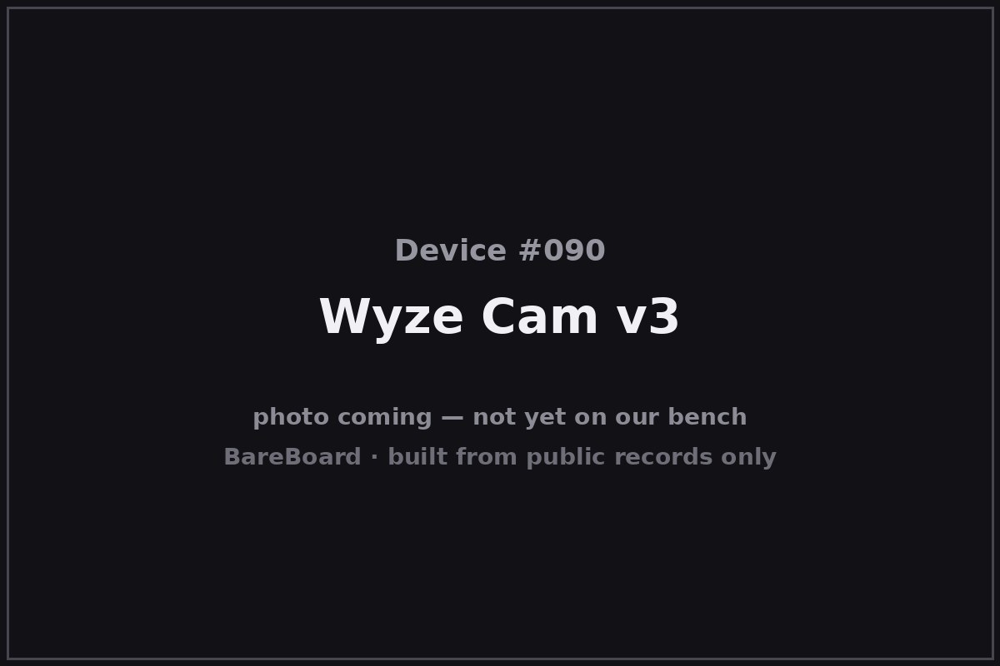

The Autopsy Report · Device #090
Wyze Cam v3
The Wyze Cam v3 is the twenty-dollar camera that embarrassed the industry: launched in October 2020, it offered color night vision, IP65 weather sealing, and local microSD recording at a price the big brands charged ten times over. It's also the most open book in this batch — the open-source community has documented its board down to the revision number.
What is this thing?
The Wyze Cam v3 is a wired indoor/outdoor security camera: 1080p video, a 130° field of view, an f/1.6 aperture, two-way audio, and a starlight sensor that records color video in near-darkness — the "color night vision" that made its reputation. TechCrunch It's rated IP65 for outdoor use and records to microSD locally as well as to the cloud. Tom's Guide
It launched at $19.99 — a price that reset expectations for the entire category. TechCrunch
Whose box is this?
This one isn't on our bench — yet. Nothing here comes from a BareBoard teardown: no disassembly, no boot logs, no bench measurements, no firmware in our hands. Everything below is built from public records — the government's FCC filing, the manufacturer's own documents, and contemporary press — read carefully and cited line by line. That's the deal with these reports: when a fact can't be verified from a public record, we say so, out loud.
The moment this hardware crosses our bench, this report gets a second act: our own photos, our own measurements, and anything the public record got wrong gets corrected.
A short history
Wyze launched the Cam v3 on October 27, 2020, as the successor to the wildly popular v2. TechCrunch The upgrades that mattered: the starlight sensor for color night vision, IP65 weatherproofing so it could live outside, and a wider f/1.6 lens. Tom's Guide
Revision discipline matters: later production runs shipped as hardware revisions A, B, C, and F, which differ inside. This report is about the original hardware — board WYZEV3_T31GC2053 V1.4_20201010 — documented by the open-source community. OpenIPC wiki Keep the later revisions in their own lane.
The outside

The v3 is a small white cube on a magnetic-base stand — the Wyze look. The front face carries the lens and IR array behind a dark window; the rear holds the microSD slot, setup button, and speaker; power arrives over micro-USB. Contemporary reviews describe the compact, mount-anywhere design. Tom's Guide
Reading the plastic
Mold marks, date wheels, material codes — the shell's birth certificate. This is bench-only evidence: without the physical unit in our hands, there's nothing honest to read here. What the enclosure looks like is described above from public photos; what's molded into it awaits the bench.
The board
The public FCC filing includes internal photographs (exhibit document 5001016), and the open-source community has gone further: the OpenIPC project documents the original-revision board as WYZEV3_T31GC2053 V1.4_20201010. OpenIPC wiki That's the board this report describes — original hardware only.
Under the microscope: the chips
- Ingenic T31ZX — the main system-on-chip, a MIPS-based video processor from Ingenic Semiconductor, documented by the OpenIPC community for the original revision. OpenIPC wiki
- Realtek RTL8189FTV — the Wi-Fi radio (802.11 b/g/n), likewise documented for the original revision. OpenIPC wiki
- Image sensor and memory part numbers for this board are not verified in the public records we've reached — deliberately not listed. Later A/B/C/F revisions changed components; their chip lists belong to their own reports.
The government's file on this box
The FCC equipment authorization is FCC ID 2AUIUWYZEC3, grantee Wyze Labs, Inc. fccid.io filing The filing's internal photographs (document 5001016) are part of the public record and corroborate the community's board documentation.
Listening in
We have no boot log for this device — no unit on the bench means nothing to listen to. But the posture is worth stating up front, because it governs everything BareBoard ever does with a live device.
We listen, we don't knock. A serial console is a place to watch a device narrate its own startup, not a place to log in, change things, or break past anything the manufacturer locked. On our bench we attach read-only: power and ground, one receive wire, and silence on the transmit line. We never use JTAG or SWD debug headers to take control, never extract or modify firmware, never hunt for credentials, and never publish anything that would let someone else bypass a lock or defeat authentication.
When this device arrives, the first question will be: where does it talk, and does it talk to us unprompted? Until then, that question stays open.
What we found
- The Wyze Cam v3 launched October 27, 2020 at $19.99: 1080p, color night vision, IP65, local microSD recording.
- The original-revision board (WYZEV3_T31GC2053 V1.4_20201010) is publicly documented: Ingenic T31ZX SoC, Realtek RTL8189FTV Wi-Fi.
- Later A/B/C/F revisions differ inside — this report is original-hardware only.
What we didn't do
- We never opened a unit, attached to a debug port, or powered one up for this report.
- We never extracted, modified, or shared any firmware or software.
- We never published or used any credentials, keys, or bypass techniques.
- No boot logs, no bench measurements, and no photos of our own — because there is no unit of ours to photograph. The device photo above is credited in its caption.
By the numbers
- Launch: October 27, 2020
- Board: WYZEV3_T31GC2053 V1.4_20201010 (original revision)
- SoC: Ingenic T31ZX
- Wi-Fi: Realtek RTL8189FTV (802.11 b/g/n)
- Video: 1080p, 130° field of view, f/1.6
- Rating: IP65
- Price at launch: $19.99
- FCC ID: 2AUIUWYZEC3
- Bench status: Not yet on our bench
Words to know
- Starlight sensor
- An image sensor sensitive enough to record usable color video in very low light — the v3's headline feature.
- IP65
- Dust-tight and protected against water jets — the v3's outdoor rating.
- OpenIPC
- An open-source project documenting IP-camera hardware and building alternative firmware; a goldmine for public hardware records.
Sources & confidence
- Wyze launches version 3 of its $20 security camera — TechCrunch, Oct 2020 link — Confirmed
- Wyze Cam v3 review — Tom's Guide link — Likely
- Wyze device integration (T31ZX SoC, RTL8189FTV, board V1.4_20201010) — OpenIPC wiki link — Likely
- FCC filing 2AUIUWYZEC3, grantee Wyze Labs, Inc. (internal photos, doc 5001016) — fccid.io link — Confirmed
Legal note. BareBoard is an educational project. Everything on this page is derived from public records — our own bench work begins only when hardware arrives. We don't publish, host, or distribute firmware, keys, passwords, or credentials, and nothing here bypasses a lock, defeats authentication, or extracts software from a device. Product names and trademarks belong to their respective owners and appear here only to identify the hardware. If you believe anything here infringes your rights, contact us and we'll address it promptly.